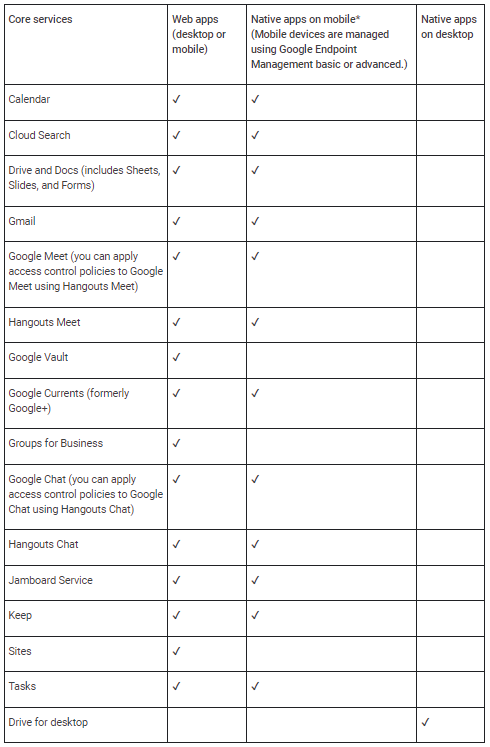

Using Reverse Proxy as a Service with Google Workspaces
You will need to be licensed for Context-Aware Access Support. There are requirements for licensing as well as caveats in this Google Help article. There are a limited number of applications at this point that context awareness works with or for, as shown below.
|  |
Certain apps have known limitations using reverse proxy. For more information, go to Apps not supported with Reverse Proxy.
For SAML apps, policy evaluation occurs during sign-in to the app.
Third party SAML apps that use Google as the identity provider. A third party identity provider (IdP) can also be used (third party IdP federates to Google Cloud Identity and Google Cloud Identity federates to SAML apps). For more information, go to Set up single sign-on for managed Google Accounts using third-party Identity providers.
Context-Aware Access policies are enforced when a user signs in to a SAML app. For example, if a user signs in to a SAML app at the office and walks over to a coffee shop, a Context-Aware Access policy for that SAML app isn’t rechecked when the user changes location. For SAML apps, the policy is rechecked only when the user session ends and they sign in again.
If a device policy is applied, web browser access on mobile (including mobile apps that use a web browser for signin) is blocked.
Cloud Identity Premium allows for only the following context awareness policies.
 |
In addition, endpoint management will need to happen on desktops and mobile devices. For more information, go to Define access levels.